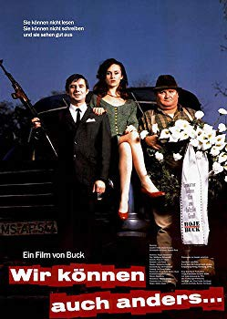
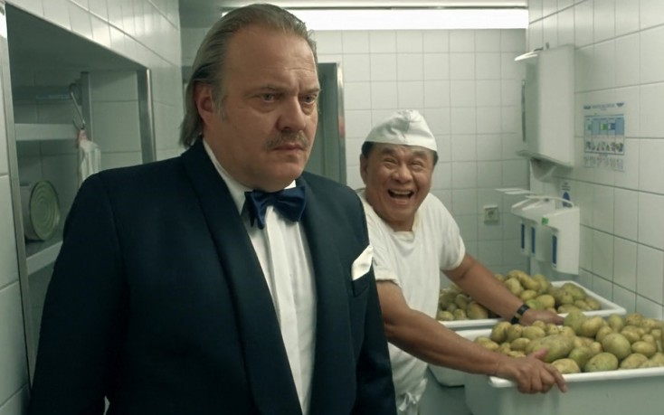

#9229 Wir können auch anders...
 
 IMDB-Wertung: 7.5 / 10
IMDB-Wertung: 7.5 / 10  Metascore: 0
Metascore: 0 
Two brothers both of which can neither read nor write making their way across Germany in order to claim to their inheritance. On their way they meet Viktor, a deserted soldier of the sowjet red army and Nadine, a beautiful young woman. Later an incident with some highwaymen, which can be solved easily with Viktor's kalashnikov, they become accused for murder - something they had neither intended nor realized. They claim Nadine to be their hostage, fleeing police forces until they reach the coast.
Jahr: 1993
Dauer: 86 Minuten
FSK: 6
Land: Deutschland Studio: Delphi Filmverleih ProduktionTonspuren:
Untertitel:
Auflösung: SD (692x484) Größe: 898 MB
Genre: Komödie
Regisseur: Detlev Buck
Drehbuch: Detlev Buck
Soundtrack: Detlef Petersen
Darsteller:
 Joachim Król als Rudi Kipp aka 'Kipp'
Joachim Król als Rudi Kipp aka 'Kipp'- Horst Krause als Moritz Kipp aka 'Most'
 Sophie Rois als Nadine
Sophie Rois als Nadine- Armin Dillenberger als
- Konstantin Kotljarov als Viktor
 Heinrich Giskes als Kommissar (detective)
Heinrich Giskes als Kommissar (detective)- Lutz Weidlich als Landvermesser (surveyor)
- Doris Bierett als Cafedame (Lady at the cafe)
- Christine Harbort als Cafedame (Lady at the cafe)
- Hans Martin Stier als Tankstellenverkaeufer (service man at gas station)
-  Jan-Gregor Kremp als Wegelagerer (highwayman)
- Uwe Dag Berlin als Wegelagerer (highwayman)
- Rainer Gladosch als Wegelagerer (highwayman)
- Christian Schild als Wegelagerer (highwayman)
- Tom Uhrig als Wegelagerer (highwayman)
- Reinhard Krökel als Assistent des Kommissars (assistant to detective)
- Ronald Suffa als Assistent des Kommissars (assistant to detective)
- Henry Suckert als Bestattungsunternehmer (entrepreneur in funerals)
- Angelika Ritter als Imbissdame (Lady at the snack bar)
- Hanno Thurau als Spendierhose (benefactor)
- Ernst Kahl als Getränkemann
- Axel Altmann als
- Johannes Baaske als
- Gennadi Barats als
 Detlev Buck als Skinhead
Detlev Buck als Skinhead- Dieter Dost als
- Viktor Edik als
- Miriam Frankovic als
- Eduard Gernart als
- Zhao Houan als
- Roman Jarmolinski als
- German Jewtjugin als
- Enrico Kalinna als
- Heinz Kamm als
- Albert Kitzl als
- Hans Koetter als
- Karl-Heinz Krueger als
- Horst Kruse als
- Gerhard Marcel als
- Ewald Mikat als
- Peter Mitschka als
- Ronny Naffin als
 Ingo Naujoks als Fahrer des Schweinetransports
Ingo Naujoks als Fahrer des Schweinetransports- Thorben Peters als
- Jewgenia Rabkina als
- Vadim Rafikov als
- Alfred Safulin als
- Kurt Saurau als
- Otto Schmiedeberg als
- Rolf-Peter Seeliger als
Datei: X:\1993\Wir können auch anders... (1993, FSK6, 692x484).mkv seit 20.07.2018
Festplatte: HD 1992-1995
 Es gibt insgesamt 68 Filme in der Gruppe '1993'
Es gibt insgesamt 68 Filme in der Gruppe '1993'